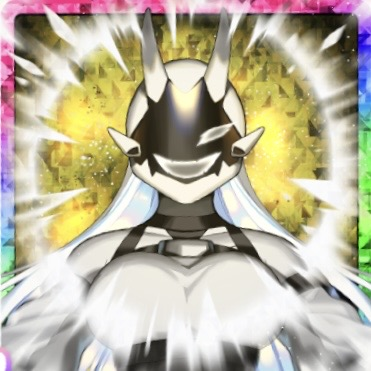

超根性
[状態変化]残りライフが少ないときに稀に効果発動
・通常/追撃/連撃ダメージを受けたときライフ１で耐える＜１回＞

SSR
| レアリティ | SSR | オーラ | 白 |
|---|---|---|---|
| カードタイプ | 命中 | アクセサリー | ○ |
| モン類 | 怪物 | イベント2 | 超根性 |
| 実装日 | 2026/09/14 | ||
| 応援効果 | +30% |
|---|---|
| 得意率 | +30% |
| 初期命中 | +23 |
| モン類上限解放 +60 | 育成対象とモン類が一致したとき、すべての基礎ステータスを上限アップ |
|---|---|
| オーラスキルアップ | 育成対象とオーラが一致し、修行によって技が強化された時、獲得する技能力が1段階アップ（重複不可） |
| 修行効果アップ +8% | 修行したとき、基礎ステータスの上昇量アップ |
| 大成功率アップ +11 | 一緒にトレーニングしたとき、大成功の確率アップ |
| 命中上限アップ +180 | 命中の基礎ステータスを上限アップ |
| 命中アップⅡ +3 | 命中の素質アップ +3% 一緒にトレーニングしたとき、命中の上昇量アップ+3 |
|---|---|
| モン類強化 +4 | 育成対象とモン類が一致したとき、モン類レベル上限アップ（同効果内で最大Lv5まで） |
| トレ効果アップ + +8% | 一緒にトレーニングしたとき、基礎ステータスの上昇量アップ+8%と失敗率ダウン-8% |
|---|---|
| オーラEXトレパワーアップ +50% | 育成対象とオーラが一致したとき、トレーニング時のEXトレパワー上昇量アップ（重複不可） |
| オーラ超ワイルド | 育成対象とオーラが一致した時、修行時のノラモン遭遇率+50%アップとノラモン勝率アップ さらに、ボスモン遭遇率が上昇し、ノラモンに勝利時一度だけボスモンが確定で出現（重複不可） |
|---|---|
| 大成功率アップ +9 | 一緒にトレーニングしたとき、大成功の確率アップ |
| トレ効果アップ +11% | 一緒にトレーニングしたとき、基礎ステータスの上昇量アップ |
|---|
[状態変化]残りライフが少ないときに稀に効果発動
・通常/追撃/連撃ダメージを受けたときライフ１で耐える＜１回＞
[怪物]相手が技使用・移動のいずれか不可の時、次の効果
・耐久値＜３５０＞の【シールド】展開＜２０秒＞＜１回＞
・このシールド展開中、攻撃ステータス＜＋１５％＞
[怪物]相手が技使用・移動のいずれか不可の時、次の効果
・耐久値＜４００＞の【シールド】展開＜２０秒＞＜１回＞
・このシールド展開中、攻撃ステータス＜＋２５％＞と[業物Ｌｖ６]
[怪物]バトル開始時、モン類Ｌｖ１毎に全ステータス＜＋５＞＜最大＋１００＞
[怪物]バトル開始時、次の効果
・モン類Ｌｖ１毎に全ステータス＜＋１５＞＜最大＋３００＞
・[モン類有利]技を受けた時、相手のいずれかの間合いの技が使用不可＜２０秒＞＜１回＞
＜オーラ白＞技発動時、[相手黒]に次の技必中＜１回＞
[自身白]命中ステータスを３％上昇
[怪物]命中ステータスを３％上昇
[雪山]ガッツダメ上昇Ｌｖ３
[砂漠]命中率上昇Ｌｖ３
[雪山]命中ステータス＋１００
[晴れ]命中ステータス＋１００
[怪物]命中率上昇Ｌｖ４